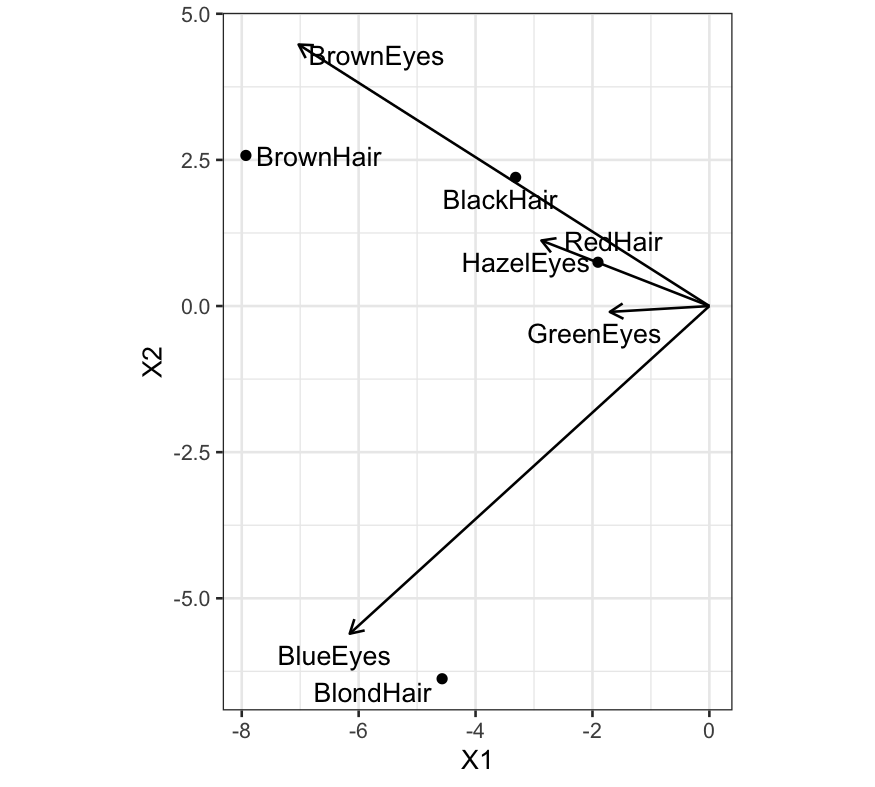
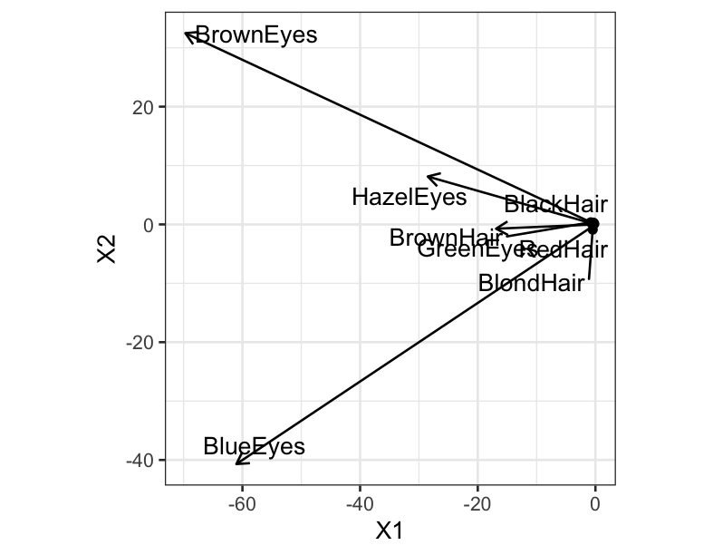
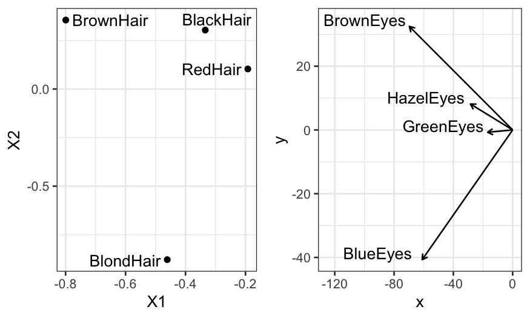

Julia Fukuyama
Singular Value Decomposition
Reduced Rank Biplots
Reading: Greenacre, Biplots in Practice, Chapter 5. The book website contains links to all the chapters. Also here.
A biplot is a generalization of a scatterplot to an arbitrary number of variables.
The value of each observation for each variable is read off of the biplot by projecting the point onto the variable “axis”, just as in a scatterplot.
We can represent a matrix \(\mathbf S \in \mathbb R^{n \times p}\) as a biplot if we can write \(\mathbf S = \mathbf L \mathbf R^T\), where \(\mathbf L \in \mathbb R^{n \times 2}\) and \(\mathbf R \in \mathbb R^{p \times 2}\).
One more concept from linear algebra:
The rank of a matrix is the maximum number of linearly independent rows or columns of a matrix.
A set of vectors \(\mathbf v_1, \ldots, \mathbf v_n\) is linearly dependent if there exist a set of scalar values \(a_1, \ldots, a_n\) such that \(\sum_{i=1}^n a_i \mathbf v_i = \mathbf 0\), where \(\mathbf 0\) represents the vector containing all zero values.
A set of vectors \(\mathbf v_1, \ldots, \mathbf v_n\) is linearly independent if it is not linearly dependent.
Note: If you’ve had linear algebra this should be familiar to you. If you haven’t had linear algebra or don’t particularly remember about ranks that’s ok too, the main idea here is going to be that the rank of a matrix controls whether we can represent it exactly in two dimensions or not.
Properties of the rank:
The rank is well defined, for any matrix the number of linearly independent rows and the number of linearly independent columns is the same.
An \(n \times p\) matrix has rank at most \(\text{min}(n, p)\).
If a matrix \(\mathbf S \in \mathbb R^{n \times p}\) has rank \(k\), there exist matrices \(\mathbf L \in \mathbb R^{n \times k}\) and \(\mathbf R \in \mathbb R^{p \times k}\) such that \(\mathbf S = \mathbf L \mathbf R^T\).
Suppose we have a matrix \(\mathbf S \in \mathbb R^{n \times p}\), and \(\mathbf S\) has rank greater than 2.
To make a biplot, we need to have \(\mathbf S = \mathbf L \mathbf R^T\), where \(\mathbf L \in \mathbb R^{n \times 2}\) and \(\mathbf R \in \mathbb R^{p \times 2}\).
If the rank if \(\mathbf S\) is more than 2, such matrices don’t exist!
Solution: Find the rank-2 matrix \(\hat {\mathbf S}\) that most closely approximates \(\mathbf S\), and use that to make a biplot.
\[ \hat {\mathbf S} = \text{argmin}_{\mathbf T : \text{rank}(\mathbf T) = 2} \sum_{i=1}^n \sum_{j=1}^p (\mathbf S_{ij} - \mathbf T_{ij})^2 \]
The Singular Value Decomposition (SVD) is one of the most useful matrix decompositions.
It says that any matrix \(\mathbf S\) of rank \(r\) can be written as \[ \mathbf S = \mathbf U \mathbf D \mathbf V^T \] where:
\(\mathbf U \in \mathbb R^{n \times r}\), with orthogonal columns (the scalar product between any two distinct columns is 0, the scalar product between any column and itself is 1).
\(\mathbf D \in \mathbb R^{r \times r}\) is a diagonal matrix, with positive numbers on the diagonal. These are written in decreasing order.
\(\mathbf V \in \mathbb R^{p \times r}\), with orthogonal columns.
We can use the SVD to find the solution to our problem on the previous slide:
We want \(\hat{\mathbf S}\) such that \[ \hat {\mathbf S} = \text{argmin}_{\mathbf T : \text{rank}(\mathbf T) = 2} \sum_{i=1}^n \sum_{j=1}^p (\mathbf S_{ij} - \mathbf T_{ij})^2 \]
It turns out that \(\hat{\mathbf S} = \mathbf U_{(2)} \mathbf D_{(2)} \mathbf V_{(2)}^T\), where
\(\mathbf U_{(2)} \in \mathbb R^{n \times 2}\) is the matrix containing the first two columns of the matrix \(\mathbf U\) in the SVD of \(\mathbf S\)
\(\mathbf D_{(2)} \in \mathbb R^{2 \times 2}\) is the diagonal matrix containing the first two rows and columns of \(\mathbf D\) in the SVD of \(\mathbf S\).
\(\mathbf V_{(2)} \in \mathbb R^{p \times 2}\) is the matrix containing the first two columns of the matrix \(\mathbf V\) in the SVD of \(\mathbf S\)
The values in \(\mathbf D\) tell us about how well \(\hat {\mathbf S}\) approximates \(\mathbf S\).
We have
\[ 1 - \frac{\mathbf D_{11}^2 + \mathbf D_{22}^2}{\sum_{i=1}^r \mathbf D_{ii}^2} = \frac{\sum_{i=1}^n \sum_{j=1}^p (\hat {\mathbf S}_{ij} - \mathbf S_{ij})^2}{\sum_{i=1}^n \sum_{j=1}^p \mathbf S_{ij}^2} \]
This is the quality of a rank-2 approximation because we are interested in biplots and representations of \(\mathbf S\) in the plane, but the analogous result holds for approximations of any rank.
\(\hat{\mathbf S} = \mathbf U_{(2)} \mathbf D_{(2)} \mathbf V_{(2)}^T\) is almost in the right form for a biplot, but not quite. We need just a left and a right matrix, and we have \(\mathbf D_{(2)}\) in the middle.
We have a couple of options:
Left matrix \(\mathbf U_{(2)}\), right matrix \(\mathbf V_{(2)} \mathbf D_{(2)}\)
Left matrix \(\mathbf U_{(2)} \mathbf D_{(2)}\), right matrix \(\mathbf V_{(2)}\)
Left matrix \(\mathbf U_{(2)} \mathbf D_{(2)}^{1/2}\), right matrix \(\mathbf V_{(2)} \mathbf D_{(2)}^{1/2}\)
The last is referred to as the symmetric biplot, and we’ll go with that for now.
## , , Sex = Male
##
## Eye
## Hair Brown Blue Hazel Green
## Black 32 11 10 3
## Brown 53 50 25 15
## Red 10 10 7 7
## Blond 3 30 5 8
##
## , , Sex = Female
##
## Eye
## Hair Brown Blue Hazel Green
## Black 36 9 5 2
## Brown 66 34 29 14
## Red 16 7 7 7
## Blond 4 64 5 8## $d
## [1] 98.392552 52.703025 9.489478 3.201033
##
## $u
## [,1] [,2] [,3] [,4]
## [1,] -0.3341488 0.3032153 0.8780094 0.15970129
## [2,] -0.7993476 0.3549164 -0.3697302 -0.31365176
## [3,] -0.1921516 0.1032077 -0.2788792 0.93522849
## [4,] -0.4609401 -0.8783183 0.1209359 0.03828508
##
## $v
## [,1] [,2] [,3] [,4]
## [1,] -0.7084325 0.61625080 0.3401477 0.05155421
## [2,] -0.6202744 -0.77213448 0.1179200 -0.07185294
## [3,] -0.2896722 0.15444110 -0.8092755 -0.48714583
## [4,] -0.1716771 -0.01382906 -0.4641847 0.86883155## [1] 0.9920139## Distribute the singular values evenly between the left and right singular vectors
left_matrix = hec_svd$u %*% diag(hec_svd$d^(.5))
right_matrix = hec_svd$v %*% diag(hec_svd$d^(.5))Let’s check the quality of the approximations
## Eye
## Hair Brown Blue Hazel Green
## Black 36 9 5 2
## Brown 66 34 29 14
## Red 16 7 7 7
## Blond 4 64 5 8## [,1] [,2] [,3] [,4]
## [1,] 36 9 5 2
## [2,] 66 34 29 14
## [3,] 16 7 7 7
## [4,] 4 64 5 8## [,1] [,2] [,3] [,4]
## [1,] 33.1 8.1 12.0 5.4
## [2,] 67.2 34.3 25.7 13.2
## [3,] 16.7 7.5 6.3 3.2
## [4,] 3.6 63.9 6.0 8.4Set up for making a biplot:
## Change the matrices to data frames and add a column describing the variables
left_df = data.frame(left_matrix, HairColor = paste0(rownames(HairEyeColor), "Hair"))
right_df = data.frame(right_matrix, EyeColor = paste0(colnames(HairEyeColor), "Eyes"))## X1 X2 X3 X4 HairColor
## 1 -3.314523 2.2012479 2.7047077 0.28572844 BlackHair
## 2 -7.928970 2.5765809 -1.1389536 -0.56116783 BrownHair
## 3 -1.906010 0.7492551 -0.8590873 1.67325747 RedHair
## 4 -4.572204 -6.3763140 0.3725429 0.06849748 BlondHair## X1 X2 X3 X4 EyeColor
## 1 -7.027156 4.4737866 1.0478249 0.09223785 BrownEyes
## 2 -6.152689 -5.6054530 0.3632527 -0.12855519 BlueEyes
## 3 -2.873346 1.1211937 -2.4929731 -0.87157352 HazelEyes
## 4 -1.702917 -0.1003946 -1.4299209 1.55446385 GreenEyesggplot(left_df) + geom_text_repel(aes(x = X1, y = X2, label = HairColor)) +
geom_point(aes(x = X1, y = X2)) +
coord_fixed() +
geom_segment(aes(xend = X1, yend = X2, x = 0, y = 0),
data = right_df, arrow = arrow(length = unit(0.03, "npc"))) +
geom_text_repel(aes(x = X1, y = X2, label = EyeColor), data = right_df)
We can look at what happens the other way as well:
## Distribute the singular values evenly between the left and right singular vectors
left_matrix = hec_svd$u
right_matrix = hec_svd$v %*% diag(hec_svd$d)Let’s check the quality of the approximations
## Eye
## Hair Brown Blue Hazel Green
## Black 36 9 5 2
## Brown 66 34 29 14
## Red 16 7 7 7
## Blond 4 64 5 8## [,1] [,2] [,3] [,4]
## [1,] 33.1 8.1 12.0 5.4
## [2,] 67.2 34.3 25.7 13.2
## [3,] 16.7 7.5 6.3 3.2
## [4,] 3.6 63.9 6.0 8.4Set up for making a biplot:
## Change the matrices to data frames and add a column describing the variables
left_df = data.frame(left_matrix, HairColor = paste0(rownames(HairEyeColor), "Hair"))
right_df = data.frame(right_matrix, EyeColor = paste0(colnames(HairEyeColor),"Eyes"))## X1 X2 X3 X4 HairColor
## 1 -0.3341488 0.3032153 0.8780094 0.15970129 BlackHair
## 2 -0.7993476 0.3549164 -0.3697302 -0.31365176 BrownHair
## 3 -0.1921516 0.1032077 -0.2788792 0.93522849 RedHair
## 4 -0.4609401 -0.8783183 0.1209359 0.03828508 BlondHair## X1 X2 X3 X4 EyeColor
## 1 -69.70448 32.4782811 3.227824 0.1650267 BrownEyes
## 2 -61.03038 -40.6938228 1.119000 -0.2300036 BlueEyes
## 3 -28.50159 8.1395131 -7.679603 -1.5593696 HazelEyes
## 4 -16.89175 -0.7288331 -4.404871 2.7811581 GreenEyesggplot(left_df) + geom_text_repel(aes(x = X1, y = X2, label = HairColor)) +
geom_point(aes(x = X1, y = X2)) +
coord_fixed() +
geom_segment(aes(xend = X1, yend = X2, x = 0, y = 0),
data = right_df, arrow = arrow(length = unit(0.03, "npc"))) +
geom_text_repel(aes(x = X1, y = X2, label = EyeColor), data = right_df)
p1 = ggplot(left_df) + geom_text_repel(aes(x = X1, y = X2, label = HairColor)) +
geom_point(aes(x = X1, y = X2))
p2 = ggplot(right_df) +
geom_segment(aes(xend = X1, yend = X2, x = 0, y = 0), arrow = arrow(length = unit(0.03, "npc"))) +
geom_text(aes(x = X1, y = X2, label = EyeColor), nudge_y = 2, nudge_x = -30) + xlim(c(-125, 0))
multiplot(p1, p2, cols = 2)
Overall:
Not every matrix can be written as the product of two two-column matrices.
The SVD gives us the best approximation.
We have some freedom in how to make the biplot based on the SVD.
Notice that there is no estimation here: we are trying to represent the matrix, both the signal and the noise.